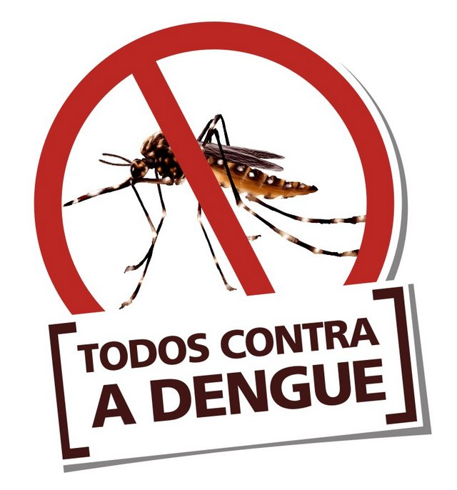

Xô Dengue

O que é?
A dengue faz parte de um grupo de doenças denominadas arboviroses, que se caracterizam por serem causadas por vírus transmitidos por vetores artrópodes. No Brasil, o vetor da dengue é a fêmea do mosquito Aedes aegypti.

Vetor
No Brasil, a primeira epidemia documentada clínica e laboratorialmente ocorreu em 1981-1982, em Boa Vista (RR), causada pelos sorotipos 1 e 4. Após quatro anos, em 1986, ocorreram epidemias atingindo o estado do Rio de Janeiro e algumas capitais da região Nordeste. Desde então, a dengue vem ocorrendo de forma continuada (endêmica), intercalando-se com a ocorrência de epidemias, geralmente associadas à introdução de novos sorotipos em áreas indenes (sem transmissão) e/ou alteração do sorotipo predominante, acompanhando a expansão do mosquito vetor.
Sintomas
O doente pode apresentar sintomas como febre, dor de cabeça, dores pelo corpo, náuseas ou até mesmo não apresentar nenhum sintoma. O aparecimento de manchas vermelhas na pele, sangramentos (nariz, gengivas), dor abdominal intensa e contínua e vômitos persistentes podem indicar um sinal de alarme para dengue hemorrágica. Esse é um quadro grave que necessita de imediata atenção médica, pois pode ser fatal. É importante procurar orientação médica ao surgirem os primeiros sintomas. Após a primeira infecção por qualquer sorotipo da dengue é predominantemente mais grave que a primeira.
Prevenção
A melhor forma de se evitar a dengue é combater os focos de acúmulo de água, locais propícios para a criação do mosquito transmissor da doença. Para isso, é importante não acumular água em latas, embalagens, copos plásticos, tampinhas de refrigerantes, pneus velhos, vasinhos de plantas, jarros de flores, garrafas, caixas d´água, tambores, latões, cisternas, sacos plásticos e lixeiras, entre outros. Ao combater o mosquito transmissor também se combate outras doenças transmitidas por mosquitos, como Chikungunya, Zika e Febre amarela.
Tratamento
Somente médicos e cirurgiões-dentistas devidamente habilitados podem diagnosticar doenças, indicar tratamentos e receitar remédios. Até o momento, não há um remédio eficaz contra o vírus da dengue. No entanto, o tratamento é realizado a base de analgésicos e antitérmicos e pode ser feito no domicílio, com orientação para retorno ao serviço de saúde. Indica-se hidratação oral com aumento da ingestão de água, sucos, chás, soros caseiros etc. Não devem ser usados medicamentos com ou derivados do ácido acetilsalicílico (AAS) e anti-inflamatórios derivados (como a dipirona), por aumentar o risco de hemorragias. No que se refere à dengue hemorrágica, o tratamento é realizado a partir de internação hospitalar do paciente.